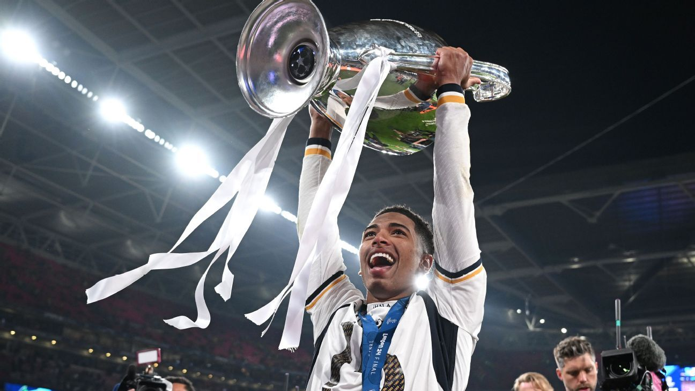

Jude Bellingham es un futbolista inglés que ha sorprendido al mundo por su madurez, su liderazgo y su calidad técnica, pese a su corta edad. Desde sus primeros pasos en el Birmingham City, ya mostraba un carácter competitivo y un entendimiento del juego que lo hacían destacar por encima del resto. Su paso por el Borussia Dortmund impulsó definitivamente su carrera, convirtiéndolo en uno de los mediocampistas más completos de Europa. En Alemania desarrolló una mezcla de potencia, inteligencia táctica y capacidad ofensiva que llamó la atención de los mejores clubes del mundo, gracias a su habilidad para recuperar balones, distribuir el juego y llegar al área rival con peligro.
Tras su llegada al Real Madrid, Bellingham se consolidó como una superestrella. No solo se adaptó de inmediato al ritmo del equipo, sino que también asumió un rol protagonista, marcando goles decisivos y liderando el centro del campo con una combinación única de elegancia y fuerza física.
Jude destaca por su mentalidad ganadora, su profesionalismo y su enorme impacto en el juego colectivo. Su capacidad para influir tanto en defensa como en ataque lo convierte en uno de los mediocampistas más completos de su generación. Con su talento y personalidad, Bellingham está destinado a marcar una era en el fútbol mundial.
| Dato | Información |
|---|---|
| Nombre completo | Jude Victor William Bellingham |
| Fecha de nacimiento | 29 de junio de 2003 |
| Nacionalidad | Inglés |
| Posición | Mediocampista |
| Club actual | Real Madrid |
| Número | 5 |
| Dato curioso | Con solo 17 años ya jugaba como titular en el Borussia Dortmund. |
| Más información | Mas informacion de Jude Bellingham |
| @judebellingham |